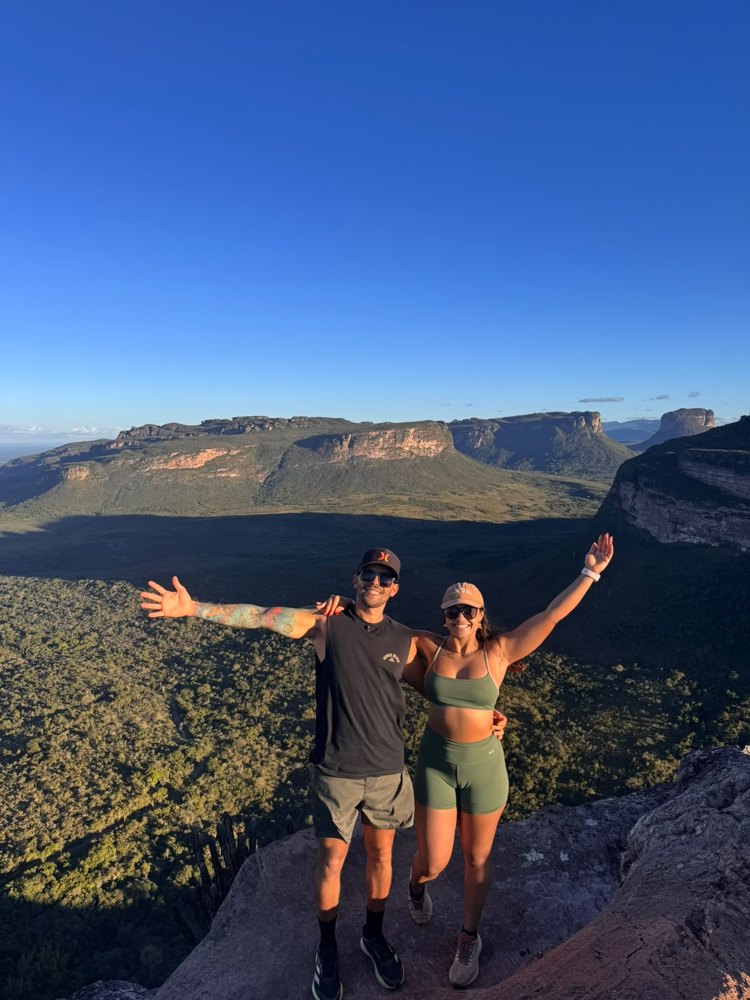

Planejamento personalizado
Cada viagem é planejada de acordo com seu perfil, suas preferências, o tempo disponível e o orçamento.
VIAJAR É VIVER MAIS
Ecoturismo, aventura, cruzeiros e viagens personalizadas, planejadas de acordo com o seu jeito de viajar.
Da primeira ideia ao retorno para casa, você conta com o suporte da Rud Viagens.
EXPERIÊNCIAS RUD VIAGENS
Destinos para conhecer no seu ritmo, com planejamento de acordo com o seu perfil.
Quer explorar mais opções para sua viagem?
Conhecer todos os destinos →Encontrou um destino que combina com você?
Quero planejar minha viagem →CONSULTORIA INDIVIDUAL DE MILHAS
Aprenda a acumular pontos, aproveitar oportunidades e emitir passagens aéreas com milhas em uma consultoria personalizada para seu perfil e seus objetivos de viagem.
Investimento: R$ 800,00
PLANEJAMENTO, EXPERIÊNCIA E PROXIMIDADE
Cada viagem é planejada de acordo com seu perfil, suas preferências, o tempo disponível e o orçamento.
Conhecemos pessoalmente destinos como Chapada Diamantina, Jalapão, Lençóis Maranhenses e Vale do Pati. Essa vivência ajuda a orientar suas escolhas e preparar melhor sua viagem.
Você tem contato direto com a Rud Viagens pelo WhatsApp para receber orientação e suporte conforme o serviço contratado.
Passagens, hospedagem, passeios, seguro e roteiro podem ser organizados conforme suas necessidades, em uma proposta personalizada.

POR TRÁS DA RUD VIAGENS
Somos Rudnei e Gessica. A paixão por conhecer lugares novos e viver experiências diferentes faz parte da nossa história.
Ao longo das nossas viagens, também descobrimos como os pontos e as milhas podem nos ajudar a viajar mais e aproveitar melhor as oportunidades.
Foi dessa vivência que nasceu a Rud Viagens: a vontade de compartilhar o que aprendemos e ajudar outras pessoas a conhecer novos destinos, com planejamento, orientação e atendimento próximo.
Conheça os destinos que já vivemos. Chapada Diamantina, Jalapão, Lençóis Maranhenses, Vale do Pati e outras experiências que fazem parte da nossa história.
SERVIÇOS DA RUD VIAGENS
Organize os serviços de acordo com o seu roteiro e suas necessidades.
Proteção para você embarcar com mais segurança.
Pesquisa e emissão alinhadas ao perfil da viagem.
Pesquisa e reserva de hotéis e pousadas para cada estilo de viagem.
Opções de locação para dar mais liberdade ao seu roteiro.
Viagens planejadas de acordo com seus interesses, tempo e orçamento.
Quer contratar um serviço ou organizar a viagem completa?
Falar com a Rud Viagens →DÚVIDAS FREQUENTES
Sim. A proposta considera seu perfil, período, duração e preferências.
Conte para a Rud Viagens o destino, o período e suas preferências pelo WhatsApp. Montamos uma proposta para você.
As páginas apresentam serviços que podem compor o roteiro. As inclusões e exclusões da sua viagem são confirmadas na proposta antes da contratação.
Sim. A Rud Viagens pode ajudar com passagens, hospedagem, seguro, passeios ou o planejamento completo.
Chame a Rud Viagens no WhatsApp e conte a ideia da sua viagem. A conversa começa sem compromisso.
Sim. Conheça as opções na página de Cruzeiros e fale pelo WhatsApp para receber uma proposta.
Sim. Você pode contratar a passagem aérea ou combinar outros serviços, como hospedagem, seguro, passeios e aluguel de carro.
Sim. A Rud Viagens organiza viagens nacionais e internacionais de acordo com seu perfil e os serviços que você deseja contratar.
Sim. A consultoria de milhas aéreas combina um encontro individual com acompanhamento nas primeiras etapas de aplicação da estratégia.
Você conta seu destino, período, perfil e orçamento. A Rud Viagens pesquisa e organiza uma proposta com roteiro, serviços e condições. O planejamento está incluído na contratação, sem cobrança separada.
Você tem contato direto com Rudnei pelo WhatsApp. A disponibilidade do atendimento é combinada antes do embarque.
O atendimento é exclusivamente online. Você pode conversar e organizar sua viagem pelo WhatsApp.